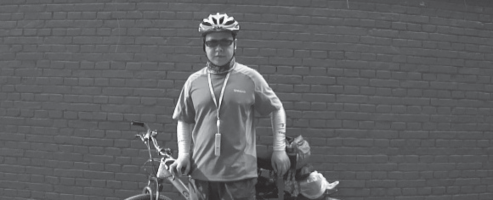
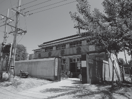
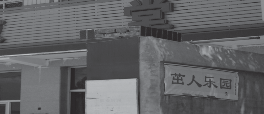
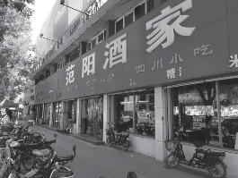
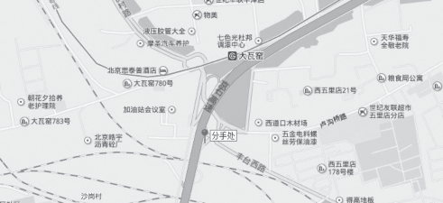

涿州行，差点被晒成螃蟹样
黑狼语录：
- 当别人都在昏睡时，只有我还在坚持！
7:20 出发，还好，走得比较早，小豆包和胡有理都还没来得及给我找 Trouble。今天的目的地是涿州，在Go2map 上比划了半天，距离差不多80 公里，感觉距离有点稍远。
照例在出发墙前留影，激励自己一下。
7:50 到了岳各庄桥，就听到稀里哗啦一声响，车上的尾灯居然掉了，四分五裂，捡起来看看，用胶布还能修复。
8 点整 到了丰北桥，已经走了 11 公里，太阳特别的大，已经感觉到了炎炎热气，天气预报说今天会达到 33 摄氏度。
8:40 走了 20 公里，到了卢沟桥附近，过了一个小桥，也没看见桥上有狮子什么的，应该不是卢沟桥，紧挨着就是杜家坎环岛。一过环岛也没看路，直接冲过一个大下坡，爽，达到了 41.8 公里 / 小时，然后就觉得不对劲，路怎么越
走越窄呢，一问路人，走错出口了，又冲回了大上坡，找到了G107 国道。这边的道路标识很少，容易走错。
9:12 到了京良环岛，看了看地图，没错，应该就是沿着京周路走。天已经很热了。
休息了几分钟，刚要出发，一个穿着骑行服的哥们从后面过来，看到我，下了单车聊了几句，正好顺路，他住在离涿州25 公里的高碑店，从北京回高碑店，于是开始一起走。
哥们比我年轻不少，还带着 GPS，聊天走路确实感觉轻松了不少。9:45，只顾着聊天了，走错了，走到了京港澳高速上了，偏离路线，估计多走了 5-8公里吧。
11:45 到了涿州，不知不觉就到了。这个哥们体力居然还不如我，这 2 个半小时，我骑的比较轻松些。现在是总里程 70 公里，一路上只休息了两次。最后的 20 公里骑的比较痛苦，有点小坡还有点小风，而且还非常暴晒，平均速度在 20 左右，有时只能达到 18 公里 / 小时。
休息了一会儿，分手，我直接找吃饭的地方，饿了，这次严重体会了饿的感觉，可能和 30 多度的天气有关吧。
进了涿州市内，转了一会儿，看到的第一个建筑物居然是基督教堂。
而且还是一个特别谦虚的教堂，看到旁边发黄背景的红色油漆字了吗，“茁人乐园？”=“拙人乐园？”，难道旁边是幼儿园，还是自我谦虚呢？
又骑行了 2 公里，到了一家人气比较旺的酒家。就是它了，看着比较亲切，我喜欢的风格。
12:20 在范阳酒家，居然爆满，等了一会儿，才有空座位。
14:10 开始往回返，里程表上是 74.4 公里。本来想早点往回返，路上转了转超市，时间过得还真是快，转眼 14 点多了，不休息了，让暴热的太阳来见证我的毅力吧。
身体没有感觉到不爽，只是大腿肌肉稍微有点发木，使不上力量，要慢速骑行缓解几分钟。
一出就感觉很不错，顺风、下坡，来时和那个哥们聊天，没时间照相，回去多照些吧。
14:20 到了涿州收费站，总里程 79.3 公里。
刚骑了 20 分钟， 热，暴晒，一天最热的时间段，哎 ~~，风向也是飘忽不定，忽前忽后。
估计在 15:00 左右，正准备找个地方休息下，补充水分，后面又上来一个骑单车的，聊了几句，也是从涿州回北京的，又顺路，又同行，没顾上休息，继续。
这个哥们比我小 2 岁，体力明显比我好，带着我骑。看着他轻松的姿势，感觉自己略微急促的喘息，哎 ~~，彻底体会了来时的那个哥们感觉，这么快就角色调换了。
期间，在我的要求下，休息了3 次，那个哥们吸了3 支烟，我则是喘了3 回气。
16:52 两个人分手，我马上又迷路了，就在卢沟桥附近的一个挺复杂的路口。
如下图：
下来，看了半天的地图，还是走错了，居然又跑到了高速路上，看着高速上的标识牌，离西南四环还有 1 公里，没办法，走高速吧。走了一会儿，居然高速路边有个警车，无视，冲过去。警察也无视我。
分手后，我速度就慢下来了，呵呵，时间还早，不急。
18:00 到家，总里程 142 公里，比地图上测的少了很多。
去的时候比较爽，那个哥们体力没我好，带着他走，比较轻松，回来时体会到被带着的感觉，累，很疲惫，非常的想喝水、休息。
夏天还是要穿长袖、长裤，路上碰到的 2 个哥们都是短袖短裤，都是被晒成了螃蟹样了，哈哈，幸亏我没买到短袖的骑行服。
题外话：
- 到家后，那个找了一周的耳机居然又找到了。就在天天背着的那个包里面，抖来抖去，居然自己跳出来了。哎 ~~，用它的时候，跑的没有影踪，不用的时候，又蹦出来，诚心找不痛快！
- 高中同学来北京玩，非常应该周六见一见的，不过，涿州行计划了一周，哎 ~~，只能给自己找个借口，下次再见，呵呵。